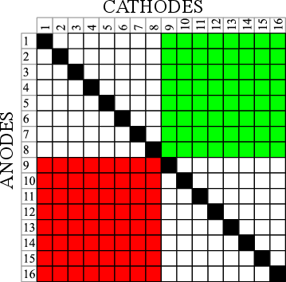
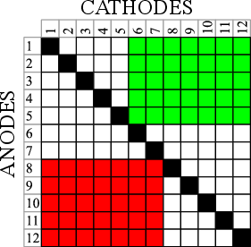
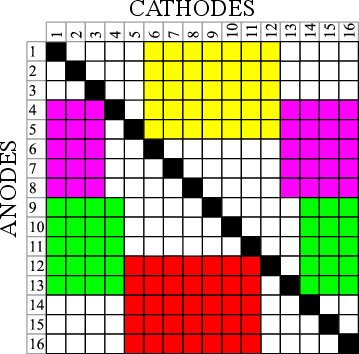
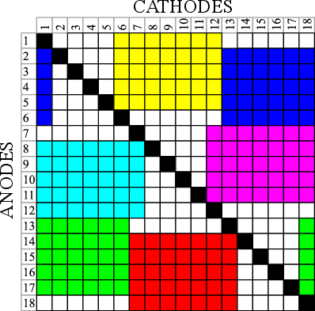
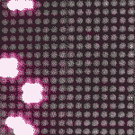
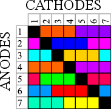
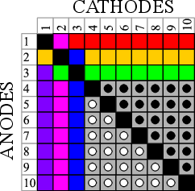
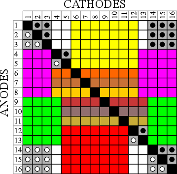
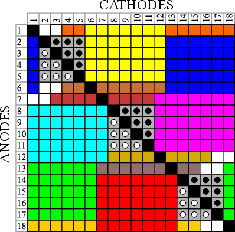

Charlie-muxing
Michael E. Rule
March 2012
The pin savings of Charlieplexing with the easy assembly of multiplexed LED modules.
Charlieplexing ( named after Charlie Allen ) is a great way to save pins on a microcontroller. Since each pin can be either high, low, or off ( 'high impedence' ), and LEDs conduct in only one direction, one can place two LEDs for for each unique pair of microcontroller pins. This also works with other devices, like buttons, but you can only place one for each pair of pins since they conduct in both directions*.
However, a recent foray into designign with Charlieplexing revealed its major drawback to me: soldering a zillion discrete LEDs is very time consuming and not for everyone. It is easier to use LED modules, which have LEDs already wired up, and are designed to be driven by multiplexing. For an N by M multiplexed grid you need N+M driving pins. However, for an N by M charlieplexed grid you need only K pins where K(K-1)=NM **. However, there is often a way to Charlieplex LED matrices to save pins without increasing assembly difficulty.
Thinking about charlieplexed grids
One might ask: how the hell am I supposed to keep track of all the possible combinations used in Charlieplexing? Since each pin can be either high (positive, or anode) or low (negative, or cathode), we can draw a K by K grid for K pins, where the cases where a pin acts as an anode are on one axis, and as a cathode, the other. Along the diagonal you have sites where a pin is supposed to act as both an anode and a cathode -- these are forbidden, and are blacked out. Here is an example grid for 16 pins:

Placing modules
I can now place components on this grid to fill it up. Say I have an 8x8 LED matrix with 8 cathodes and 8 anodes. All I have to do is find an 8x8 space large enough to hold it somewhere on the grid. For example, two 8x8 LED matrices fit into this 16 grid:

Another common size for LED matrices is 5x7. We can fit two of them on 12 pins like so:

Now it gets fun. It's ok for components to wrap around the sides. We can fit four 5x7 ( for a 10x14 pixel game board perhaps? ) matrices on 16 pins like this:

We can fit six 5x7 matrices on 18 pins ( for a 10x21 pixel game board perhaps? Large enough for original tetris! ). Eight 5x7 matrices fit on 20 pins. 8x8 matrices are a little more clunky, but you can still fit 3 of them onto 20 pins or 4 of them onto 22 pins ( 22 pins also fits 10 5x7 arrays ). We leave these last three as exercizes. ( solutions 1 2 3 4)

To demonstrate that this approach does in fact work, I rigged up a little game of life on four 8x8 modules running on 22 pins on an AtMega328. After correcting for a problem with the brightness related to the PORTC pins sourcing less current, the display is quite functional -- there is no visible refresh scanning and all lights are of equal brightness. I scan the lights one at a time, but only spend time on those that are on. (The variable frame rate is from the video processing -- the actual device is quite smooth)

Other packaged LED modules can be laid out similarly. 7 segment displays ( 8 with decmal point ) come packaged in "common cathode" and "common anode" configurations, which would be represented as a column of 8 cells, or a row of 8 cells, respectively. Often, four 7-segment displays ( 8 with decimal ) are packaged at once in a multiplexed manner -- these would be represented as a 4x8 or 8x4 block on our grid, depending on whether they were common anode or cathode. RGB LEDs also come packaged in common cathode and anode configurations. For example, here is how one could charlieplex 14 common anode RGB LEDs on 7 pins:

Hardware note: don't blow it up
When driving LEDs with multiplexing or charlieplexing, it is not uncommon to omit current limiting resistors. Since the grid is scanned, only a few LEDs will be on at once, and all LEDs spend most of their time off. If the supply voltage lies between the typical forward voltage, and the peak instantaneous voltage, we can figure out the largest acceptable duty cycle and enforce this in software. However, now one must ensure that software glitches do not cause the array scanning to stall, or that LEDs can survive a period of elevated forward voltage.
Microcontrollers will have a maximum safe current per IO pin. Sometimes, you can rely on the microcontroller to limit current to this level. Other times, attempting to force more than the maximum rating through a pin will damage the microcontroller. You can ensure that this never happens in software by never turning on more LEDs than a single IO pin can handle. Or, you can use tri-state drivers. If your microcontroller limits over-current, you can probably turn on as many LEDs as you want at once, but they will dim exponentionally with the reduction in current per LED.
Combining devices
There is nothing stopping us from combining different types of LED modules, or LEDs and buttons, in our grid. However, buttons conduct in both the forward and backward direction, so they occupy both the anode-cathode and cathode-anode positions for any pair of pins. I represent this as a black and white pair of buttons in the grid drawing. For example, one could get an acceptable calculator with 6 display digitis and 21 buttons onto 10 pins if you use a mix of common-cathode and common-anode 7-segment displays like so:

You could probably get a pretty decent mini-game using the space left over from Charlie-muxing four 5x7 modules on 16 pins. There is enough room to fit 17 buttons and 6 7-segment displays (shown as earth-tone strips below):

For the grand finali, we revisit the six 5x7 modules on 18 pins. Apart from giving us a grid large enough to hold classic Tetris, we also have room for 18 buttons, 6 7-segment displays (shown as earth-tone strips below), with 12 single-LED spots left over -- all on 18 pins. On an AtMega, this would leave 5 IO pins free -- enough room to fit a serial interface, piezo speaker, and crystal oscillator. Programming, however, would be a challenge.***

Hardware note: combining different LED colors in one grid
There are problems with combining different LEDs in one grid. If two LEDs with different forward voltages are placed on the same, say, cathode, then the one with the lower forward voltage can hog all the current, and the other LED won't light. I have found that ensuring in software that LEDs with mixed forward voltages are never illuminated simultaneously solves this problem.
Also ensure that your largest forward voltage is smaller than twice the lowest forward voltage. For example, if you try to drive a 3.6V white LED in a matrix that contains 1.8V red LEDs, the current may decide take a shortcut through two red LEDs rather than the white LED. However, it may be possible to ensure that there are no such paths by design. You must ensure that for every 3.6V forward path from pin A to B, there are no two 1.8V forward paths AC and CB for any C.
Driving software
Saving microcontroller pins and soldering time in well and good, but programming for these grids can be a real challenge! Here are some practices ( for AVR ) that I have found useful.
- Overclock the processor. Most AVRs are configured to 1MHz by default, but can run up to 8MHz even without an external crystal. The AVR fuse calculator is a godsend. Test the program first without overclocking, then raise the clock rate. Ensure that the power supply voltage is high enough for the selected clok rate. If things get dire and you need more speed, you can tweak the OSCCAL register as well.
- Prototype driver code on a device that can be removed and replaced if necessary. Repeated *ucking with the fuses to tweak the clock risks bricking the AVR. It's a shame when you have bricked AVR soldered in a TQFP package.
- Row-scan the grid. If this places too much current on the IO pins, break each row into smaller pieces that are safe. If too many LEDs are lit on a row and they appear dim, adjust the time the row is displayed to compensate.
- Store the LED state vector in the format that you will use to scan. Write set() and get() methods to access and manipulate this state that maps the structure of the charlipelxing grid onto the logical structure of your displays. Scanning code is hard enough to get fast and correct without worrying about the abstract logical arrangement of the LED grid.
- Use a single timer interrupt to do all of the scanning. Having multiple recurring timer interrupts along with a main loop can create interesting interference and beat effects in the LED matrix that are hard to debug.
- If there are buttons and LEDs on the same grid, switch to polling the buttons every so often at a fixed interval, and write there state into volatile memory that other threads can query.
- If your display is sparse ( e.g. a game of life ) you can skip sections that aren't illuminated to get a higher effective refresh rate. If your display is very sparse, and you have a lot of memory to spare, you can even scan LEDs one at a time.
Conclusion
This document outlines how to drive many LED modules from a limited number of microcontroller pins. The savings in part cost and assembly time are offset by increased code complexity. These design practices would be useful for somone who enjoys coding puzzles, or gets a kick out of making microcontrollers do way more than they are supposed to. They could also be useful for reducing part costs and assembly time for mass produced devices, where the additional time in driver development is offset by the savings in production. I originally worked through these notes when considering how to bulid easy-to-assemble LED marquee kits, but as I have no means to produce such kits, nor easy mechanism for selling them, I am leaving the notes up here for general benefit.
Also... Charrliee.
_______________________________________________
*If you place a diode in series with a button you can place two buttons for each unique pair of pins. One can make this diode a LED to create a button-press indicator.
**For those interested, K*(K-1)=N*M solves to K = ceil[ ( 1 + sqrt( 1+4NM ) ) / 2]
***I have done this with an 8x16 grid using a maximally overclocked AtMega. It is tricky. To avoid beat effects, sound, display, and button polling are handeled with the same timer interrupt. The music is intentionally restricted to notes that can be rendered with low clock resolution. Some day i may even write this up.